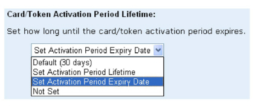
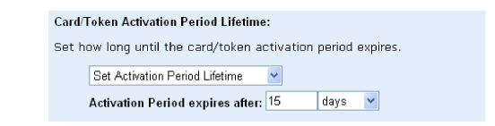
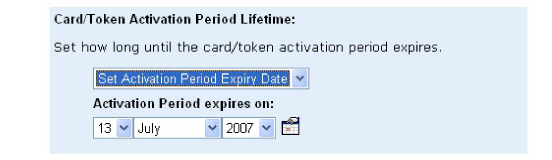

|
IdentityGuard Server 12.0 Administration Guide |
|
IdentityGuard Server 12.0 Administration Guide |
You can set activation requirements on a per user basis that override those set by policy, either one-by-one in the Administration interface or by using a bulk operation.
Only an administrator with the userActivationPeriodOverridePolicy permission can extend the activation grace period before or after that period expires. You cannot reset a grace period once the user activates a grid card or token.
To set the activation period for a single user
1. Log in to the Entrust IdentityGuard Administration interface as the administrator.
 On the
Windows computer where Entrust IdentityGuard is installed
On the
Windows computer where Entrust IdentityGuard is installed
2. On the main menu, click User Accounts.
3. Find a specific user in one of two ways:
● Use the Go To Account tab (see To search for information about one user).
● Use the Find Accounts tab (see To search for information about one or more users).
The View Account page appears.
4. Click Edit Account.
5. In the Card/Token Activation Period Lifetime drop-down list, select one of the following options:

● Default — The user’s grace period is defined by policy.
● Set Activation Period Lifetime — To specify when the user’s grace period ends, type a number in the text field then select a time value from the drop-down list (days or months).

● Set Activation Period Expiry Date — Choose a date from the drop-down lists (day, month, year). Alternatively, click the calendar icon to select a date.

● Not Set — The user never has to use second-factor authentication.
6. Click Save Changes.
To set the activation period for multiple users in a bulk operation
1. Create a bulk file. See Create a bulk file.
2. Log in to the Administration interface .
3. On the main menu, click Bulk Operations.
The Bulk Operations page appears.
4. Click Browse to locate the bulk file.
5. From the Operation to Perform drop-down list, select Modify users.
6. From the Halt Processing drop-down list, select the number of errors to allow before processing stops due to too many errors.
● After the first error — Just one error stops all subsequent operations from being processed.
● For the other options, After 10 errors, After 50 errors, and After 100 errors, the operations that have errors up to the specified number are tracked and not processed. However, all successful operations prior to the specified number of errors threshold are processed. All operations after the processing reaches the maximum number of errors specified are not processed.
For more information about bulk file options, see Perform bulk operations in the Administration interface.
7. Click Perform Bulk Operation.
The Bulk Operation in Progress page appears. The size of your bulk operation directly affects the time the operation takes to process. This page indicates the initial status of the operation.
8. (Optional) While Entrust IdentityGuard processes the bulk file, you can do the following:
● To view the current status of the bulk operation, click Update Results. (The Results page is also updated automatically every 10 seconds.)
● To cancel the bulk operation, click Cancel Operation.
Note: If you cancel a bulk operation, Entrust IdentityGuard keeps all changes it made while it processed the bulk file, up to the time of cancellation. You cannot undo a bulk operation. See Limitations of bulk operations for more information.
When Entrust IdentityGuard completes the bulk operation, the Results page appears.
9. Click Done to return to the Bulk Operation page.